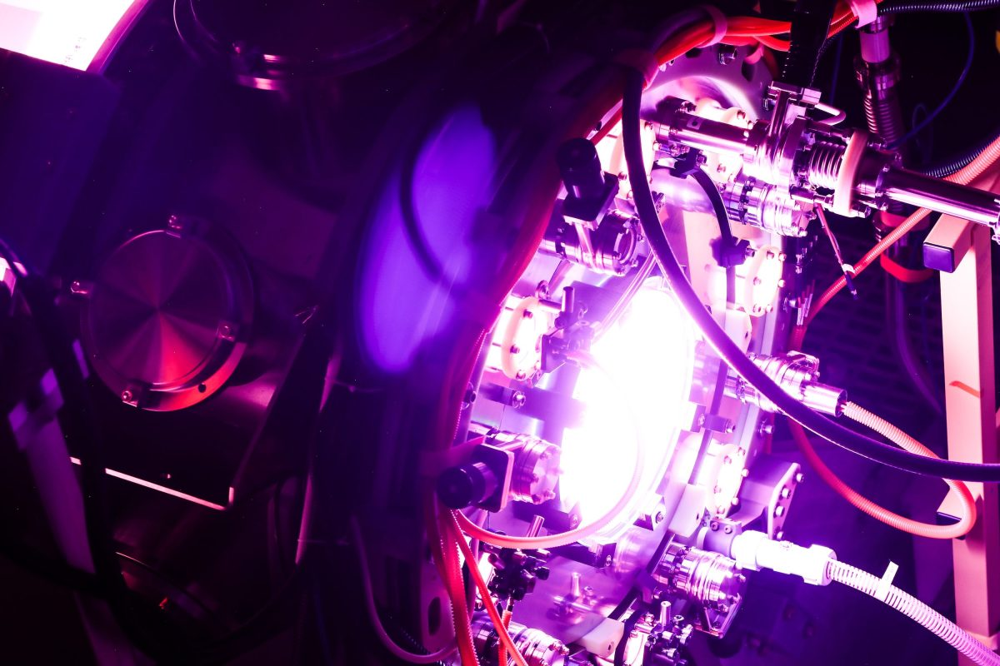
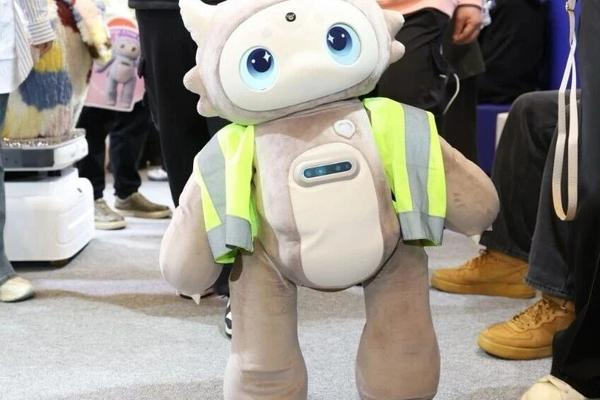

AI DAILY
AI 行业日报
03-24 · 精选 10 条
01产品发布
Luma AI发Uni-1，号称性能压过Google和OpenAI，成本低30%

Luma AI发布图像模型Uni-1，并称它在推理型图像任务上压过Google的Nano Banana 2和OpenAI的GPT Image 1.5，在物体检测上也接近Gemini 3 Pro。
这套模型走的不是主流扩散路线，而是把理解和生成放进同一套自回归架构里。按报道披露，Uni-1在2K高分辨率场景下，单张图成本大约比对手低10%到30%。
INSIGHT
图像模型这条线，卷的已经不只是“谁画得更好看”，而是谁能先理解再下笔。如果高质量生成开始和价格一起往下掉，广告、设计、内容团队改工作流的速度会比大家想得更快。
02产品发布
字节开源DeerFlow 2.0，本地Agent编排框架在GitHub走红

字节跳动开源了DeerFlow 2.0，定位是能调度多个子代理完成复杂任务的“SuperAgent harness”。报道提到，它使用MIT License，可以本地部署，也能跑在私有Kubernetes集群里。
这套框架瞄准的是长时间任务，比如深度研究、生成报告、搭网页、做视频和数据分析。它把编排层和推理层拆开，既能接云端模型，也支持通过Ollama这类工具做本地化推理。
INSIGHT
今年很多Agent项目都在秀效果，真正难的是把工具、状态、上下文和执行环境串起来。DeerFlow受关注，不只是因为它是字节开源，而是它开始像一套“可装配的生产环境”了。
03行业动态
Altman退任Helion董事长，Helion据称正谈向OpenAI出售12.5%电力

TechCrunch援引相关报道指出，Helion正和OpenAI讨论供电协议。框架如果落地，OpenAI最初可锁定Helion大约12.5%的产能，对应2030年5吉瓦、2035年50吉瓦。
Helion已向TechCrunch确认，Sam Altman会卸任董事长。公司没有证实和OpenAI的谈判细节，但公开表态称，这次调整是为了给双方未来合作腾出空间。
INSIGHT
现在看大模型竞争，盯GPU已经不够了。电力合同开始进入头部AI公司的采购清单，这说明算力战争正从芯片和机房，继续往更上游的能源层爬。
04技术突破
英伟达开源Nemotron-Cascade 2后训练配方，3B活跃参数拿下数学和代码成绩
英伟达发布了开源模型Nemotron-Cascade 2。这是一个30B MoE模型，但推理时只激活3B参数。按英伟达披露，它已经拿到2025年IMO、IOI和ICPC World Finals的金牌级表现。
更关键的是，英伟达把这次的后训练路线也公开了。新版本核心是Cascade RL和多域on-policy蒸馏，重点不在把底模继续堆大，而是把训练流程做成可复用的配方。
INSIGHT
这条新闻最值得看的，不是又一个分数表，而是英伟达把话题从“参数规模”往“训练工艺”上拽。对企业团队来说，能复现的后训练方法，往往比一个更大的底模更有现实价值。
05融资收购
Gimlet Labs拿下8000万美元A轮，要把AI推理同时跑在多家芯片上
Gimlet Labs完成8000万美元A轮融资，由Menlo Ventures领投。公司想做的是“multi-silicon inference cloud”，让同一套AI工作负载同时跑在CPU、GPU和高内存系统上。
创始人Zain Asgar判断，现在很多AI基础设施的利用率只有15%到30%。他把问题归结为：推理、解码、工具调用各吃不同硬件，但现有系统还缺一层真正懂异构调度的软件。
INSIGHT
过去两年大家都在抢芯片，今年开始有人盯住另一个浪费点：买回来的硬件并没有被用满。谁能先把异构算力调度做顺，谁就可能先吃到企业侧的降本红利。
06行业动态
西门子和阿里云深化合作，把工业仿真和AI算力打包交付中国市场

西门子在北京举办RXD大会时宣布，将和阿里云进一步深化合作。双方会把西门子的仿真产品组合与阿里云的算力和基础设施整合起来，面向中国客户按IaaS方式交付CAE能力。
同场西门子还发布了26款新的边缘、自动化与控制技术，目标是把工业场景里的AI驱动决策往更具体的工程流程里推进，而不是只停在概念验证。
INSIGHT
国内产业AI真正往前走，往往不是再发一个模型，而是把软件、算力、行业流程一起打包。这类合作一旦跑通，影响的不是一个部门，而是一整条工程链。
07产品发布
千问上线AI打车，一句话开始接管选车、选地点和出发时间
3月23日，千问上线打车能力。用户可以直接用自然语言说需求，比如车型、途经点、预约时间，系统会自动理解人数、路况偏好和服务要求，再完成车辆匹配。
量子位援引官方信息称，这项功能还能和订酒店、点外卖、导航等能力串联。千问团队同时披露，今年春节期间已有1.3亿用户在千问里首次体验AI购物，其中超过400万人是60岁以上人群。
INSIGHT
国内大模型现在最值得看的，是它们什么时候不再停在聊天框里。一旦开始接管真实交易入口，比的就不只是回答质量，而是能不能把复杂意图真的变成一次完整服务。
08网络安全
可影响数百万iPhone的漏洞工具被公开放出，旧版iOS风险抬升

一套名为DarkSword的iPhone漏洞工具更新版被人直接放上了GitHub。安全研究人员提醒，这意味着不需要太多iOS经验，也可能把现成HTML和JavaScript样本快速复用到风险链路里。
TechCrunch称，风险主要指向那些还没升级到最新iOS 26的旧版设备，可能波及数以亿计仍在使用中的iPhone和iPad。iVerify联合创始人直言，这类样本现在已经很难再被“收回去”了。
INSIGHT
很多人以为移动安全离自己很远，真正麻烦的时刻往往就是这类工具被公开之后。复用门槛一旦掉下来，剩下的就不是技术圈的讨论，而是普通用户有没有及时更新系统。
09融资收购
前华为自动驾驶团队创业做陪伴机器人，青心意创完成Pre-A轮融资

36氪报道称，情绪陪伴机器人公司青心意创完成Pre-A轮融资，投资方包括厚雪资本和天际资本。团队想把自动驾驶和具身智能里的全栈能力，压缩进一台面向消费场景的小型双足机器人。
公司介绍，其机器人基于通用人形平台“ORCA”下沉开发，目标是把双足运控、多模态交互和Agentic OS装进80厘米以内的机身里。创始人兼CEO牛腾昦是剑桥博士，曾在华为自动驾驶团队做决策规划。
INSIGHT
具身智能最近很热，但真正往消费端走时，大家拼的不是实验室里会不会翻跟头，而是能不能把成本、尺寸和情绪交互一起压下来。这条线比看上去难得多。
10行业动态
美图AI Skills接入OpenClaw生态，ClawHub开始出现可直接安装的工具链

美图宣布发布新的Meitu CLI工具，首批AI Skills已经上线ClawHub，并接入OpenClaw生态。官方说，这批能力同时覆盖个人和企业场景。
更关键的是，OpenClaw用户现在可以直接安装和调用这批技能。对Agent生态来说，这意味着框架之外，开始出现更像“插件市场”的分发层。
INSIGHT
一套Agent系统什么时候更像产品，而不是项目，通常就看两件事：有没有稳定安装方式，能不能形成第三方能力供给。美图这条新闻，给的正是这两个信号。
由 Zayen知览 整理 · 构建者视角